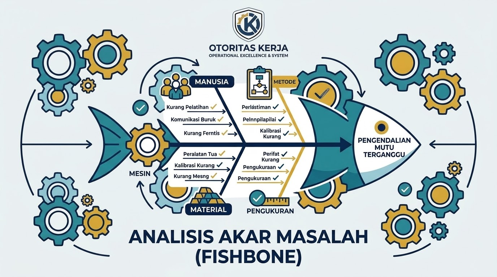

Analisis Akar Masalah dengan Diagram Fishbone
"Mengurai sumber masalah produksi secara visual menggunakan metode 6M (Man, Machine, Material, Method, Measurement, Mother Nature)."


Mengapa Menggunakan Diagram Fishbone?
Seringkali masalah di pabrik diselesaikan hanya pada gejalanya saja, sehingga masalah yang sama terus berulang. Fishbone Diagram (atau Ishikawa Diagram) membantu tim produksi menelusuri hubungan sebab-akibat hingga menemukan akar masalah yang sesungguhnya melalui pendekatan terstruktur 6M.
Detail 6 Kategori Utama (Metode 6M) & Indikator Penilaian
Agar tidak salah menempatkan kategori ("salah kamar") saat melakukan sesi brainstorming di lapangan, pahami indikator rinci dari masing-masing pilar berikut:
1. Man (Manusia)
Kunci Utama: Masalah bersumber dari faktor orang (keterbatasan fisik/mental, perilaku, atau tingkat kompetensi).
- Keterampilan & Pelatihan (Skill/Training): Karyawan baru belum paham SOP atau kurang pembekalan.
- Fisik & Mental (Fatigue/Focus): Kelelahan akibat bekerja di jam rawan atau kurang konsentrasi.
- Disiplin & Perilaku: Sengaja melanggar aturan atau tidak melakukan pemeriksaan ganda (double-check).
2. Machine (Mesin / Peralatan)
Kunci Utama: Masalah bersumber dari perangkat keras, mesin, perkakas, atau teknologi yang digunakan.
- Kerusakan Komponen: Bagian mesin aus, patah, korsleting, atau penurunan fungsi mekanis.
- Teknologi Usang: Mesin terlalu tua sehingga tidak akurat lagi atau suku cadangnya langka.
- Perawatan Buruk (Maintenance): Jadwal perawatan berkala terlewat, kotor, atau kurang pelumasan.
3. Material (Bahan Baku / Komponen)
Kunci Utama: Masalah bersumber dari bahan mentah, komponen setengah jadi, zat kimia, atau kemasan.
- Cacat Pemasok (Supplier Defect): Ukuran, kadar, atau spesifikasi tidak sesuai standar pabrik.
- Penyimpanan (Storage): Rusak di gudang karena kedaluwarsa, lembap, atau salah susun.
- Ketidaksesuaian Spesifikasi: Grade bahan dari awal berada di bawah standar proses.
4. Method (Metode / Prosedur Kerja)
Kunci Utama: Masalah bersumber dari cara kerja, prosedur operasional standar (SOP), atau alur proses.
- Ketiadaan SOP: Pekerjaan dilakukan berdasarkan kebiasaan karena tidak ada dokumen tertulis.
- Alur Berbelit (Inefficiency): Tahapan kerja bolak-balik atau banyak pengulangan tidak perlu.
- Prosedur Usang: SOP tidak relevan lagi dengan kondisi operasional lapangan saat ini.
5. Measurement (Pengukuran & Metrik)
Kunci Utama: Masalah bersumber dari alat ukur, metode inspeksi, atau standar metrik yang keliru.
- Kalibrasi Alat Ukur: Timbangan, termometer, atau sensor tidak dikalibrasi sehingga hasilnya melenceng.
- Standar Ambigu: Parameter kualitas tidak didefinisikan dengan angka pasti (subjektif).
- Target Keliru: Target KPI yang dibebankan mendorong pekerja mengorbankan kualitas.
6. Milieu / Mother Nature (Lingkungan Kerja)
Kunci Utama: Masalah bersumber dari kondisi fisik area sekitar tempat kerja atau faktor eksternal.
- Kondisi Ruangan: Suhu terlalu panas/dingin, pencahayaan kurang, atau bising.
- Kebersihan & Kontaminasi: Area kerja berdebu, lembap, atau ada getaran mesin lain.
- Faktor Eksternal: Pengaruh cuaca ekstrem atau hembusan angin langsung.
Template Tabel Analisis Akar Masalah (Metode 6M)
Gunakan format tabel praktis berikut untuk menguji temuan lapangan, memverifikasi akar masalah, hingga menentukan tindakan perbaikan:
| Kategori (6M) | Masalah / Temuan Lapangan | Pertanyaan Verifikasi Kunci | Akar Penyebab (Root Cause) | Tindakan Perbaikan (Action Plan) | PIC & Deadline |
|---|---|---|---|---|---|
| 1. Man | Operator salah setting parameter mesin. | Apakah operator paham SOP & terlatih? | Operator baru belum mendapat pembekalan SOP terbaru. | Berikan coaching & pasang cheat sheet. | SPV / 04 Nov |
| 2. Machine | Suhu pemanas berfluktuasi tidak stabil. | Apakah komponen aus / kurang perawatan? | Sensor suhu tertutup kerak residu plastik. | Bersihkan sensor & buat jadwal pembersihan rutin. | Maintenance / 03 Nov |
| 3. Material | Plastik kemasan mudah robek saat dipress. | Apakah bahan dari supplier sesuai spek? | Ketebalan bahan di bawah batas minimum standar. | Isolasi stok & terbitkan laporan NCR ke supplier. | QC & Purchasing / 04 Nov |
| 4. Method | Proses serah terima shift memakan waktu lama. | Apakah ada alur atau SOP yang jelas? | Tidak ada lembar checklist serah terima standar. | Buat form checklist ringkas harian. | Shift Leader / 05 Nov |
| 5. Measurement | Hasil uji tarik (push-pull) tidak konsisten. | Kapan alat ukur terakhir dikalibrasi? | Pegas alat uji mengalami keausan (fatigue). | Kalibrasi eksternal & ganti komponen aus. | Tim Lab / QC / 06 Nov |
| 6. Milieu | Proses pendinginan segel plastik terganggu. | Apakah suhu/angin ruangan memengaruhi? | Posisi exhaust fan terlalu dekat jalur produk. | Pasang sekat pelindung (baffle plate) transparan. | Facility / 05 Nov |
Studi Kasus Nyata: Kasus "Cacat Seal Plastik Bocor"
Berikut adalah implementasi penuh analisis Fishbone Diagram dalam bentuk tabel untuk menyelesaikan kasus spesifik cacat seal kemasan plastik di lini produksi:
| Kategori (6M) | Temuan Masalah di Lapangan | Pertanyaan Verifikasi Kunci | Akar Penyebab (Root Cause) | Tindakan Perbaikan (Action Plan) | PIC & Deadline |
|---|---|---|---|---|---|
| 1. Man | Operator baru menaikkan kecepatan mesin terlalu tinggi. | Apakah operator paham parameter standar film? | Operator kurang pengalaman & belum paham start-up setting. | Berikan pelatihan kilat & pasang panduan parameter di mesin. | Asisten SPV / 04 Nov |
| 2. Machine | Suhu sealing bar berfluktuasi hingga 15°C. | Apakah sensor suhu kotor atau rusak? | Sensor tertutup kerak residu lelehan plastik. | Bersihkan sensor & buat jadwal pembersihan rutin mingguan. | Maintenance / 03 Nov |
| 3. Material | Lapisan bahan baku dari pemasok datang terlalu tipis. | Apakah spesifikasi ketebalan sesuai dokumen? | Bahan datang berada di batas minimum toleransi kualitas supplier. | Isolasi rol bahan & terbitkan Laporan Ketidaksesuaian (NCR). | QC & Purchasing / 04 Nov |
| 4. Method | Tidak ada pengujian kekuatan segel saat mesin mulai jalan. | Bagaimana memastikan mesin siap sebelum produksi massal? | SOP start-up hanya tombol ON/OFF tanpa wajib uji fisik. | Revisi SOP Start-up dengan mewajibkan uji kebocoran (leak test). | Quality Assurance / 05 Nov |
| 5. Measurement | Alat uji tarik (push-pull) memberikan hasil tidak konsisten. | Kapan alat ukur terakhir dikalibrasi? | Pegas alat uji mengalami keausan (fatigue). | Lakukan kalibrasi eksternal alat uji & ganti komponen aus. | Tim Lab / QC / 06 Nov |
| 6. Milieu | Area jalur produk panas langsung terkena angin luar. | Apakah hembusan angin mendinginkan area segel terlalu cepat? | Posisi ventilasi/kipas terlalu dekat dengan jalur produk. | Pasang sekat pelindung (baffle plate) transparan. | Facility / 05 Nov |
Download Template Fishbone & RCA Excel
Gunakan format lembar kerja analisis akar masalah untuk mengaudit kendala operasional secara profesional.
Download Template Fishbone Sekarang